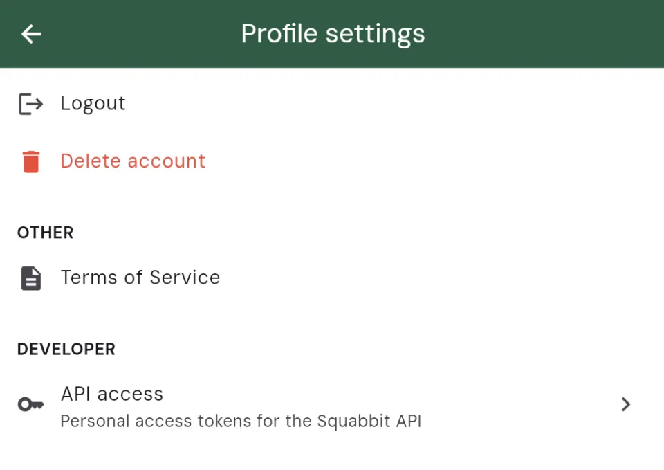
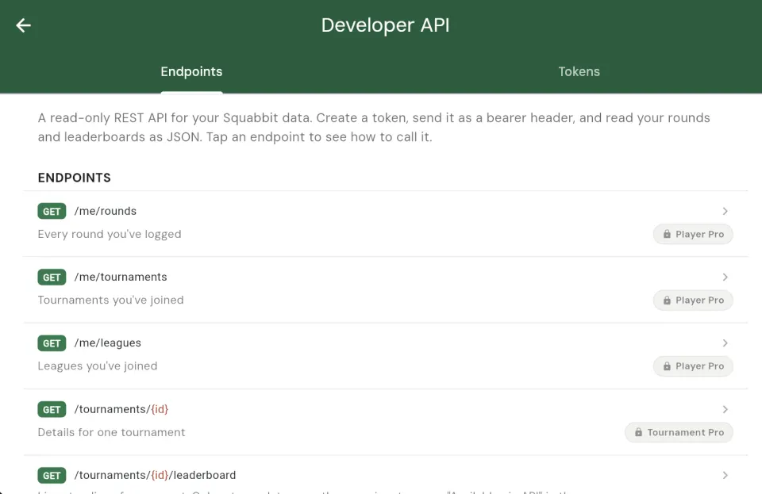
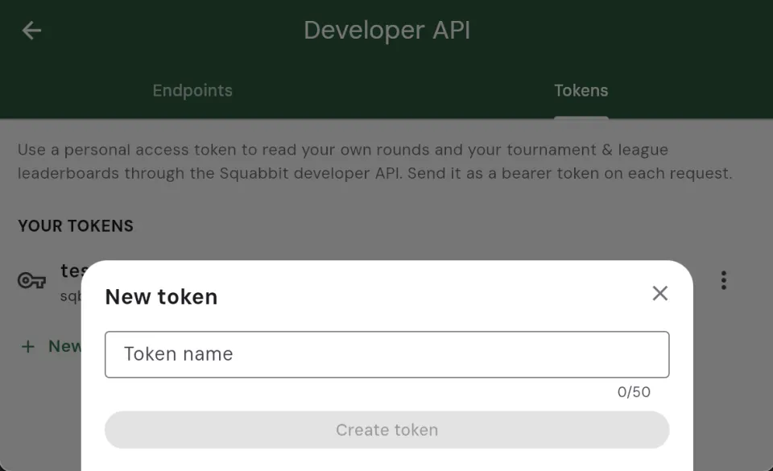
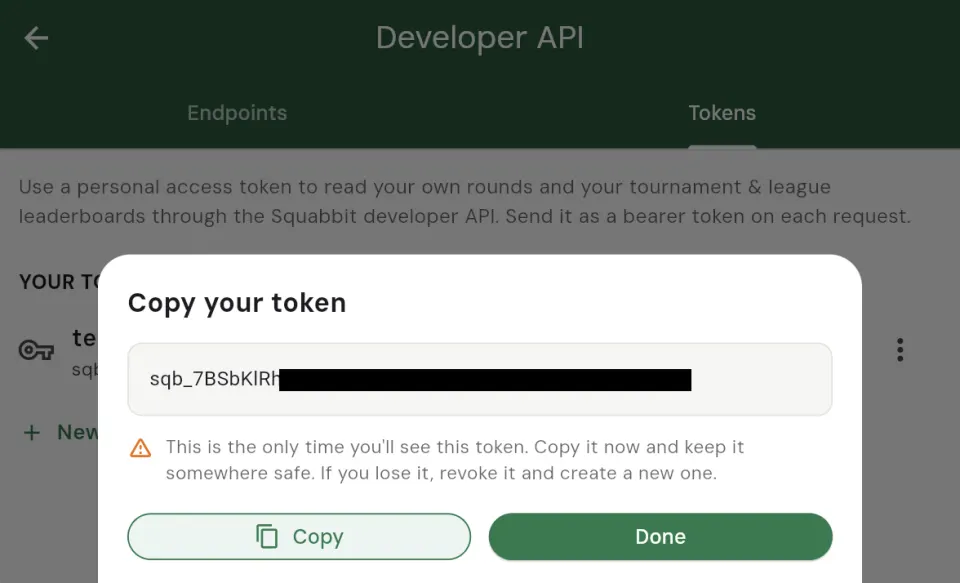
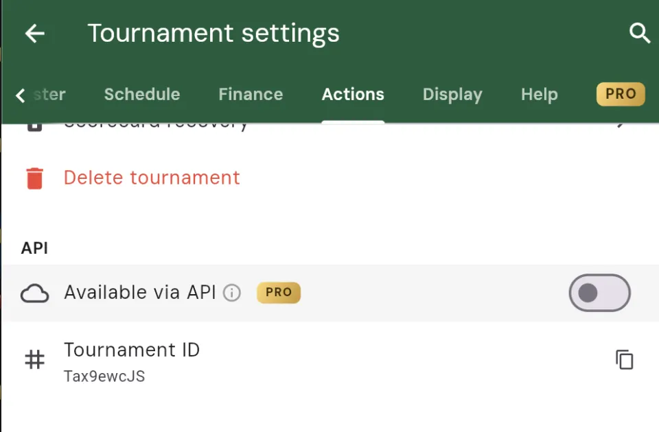

Squabbit has a read-only REST API that lets you pull your golf data out of the app and into your own tools: a personal dashboard, a league website, a spreadsheet, or anything else you want to build. You create an API token in the app, send it as a bearer header on each request, and read your rounds and leaderboards back as JSON.
Everything the API exposes is data you can already see in the app. It is read-only, so there is nothing you can change or delete through it.
The Developer API is part of Squabbit’s Pro subscriptions. Creating a token requires Player Pro. Which endpoints a token can reach depends on the Pro tier on your account:
Each tier includes the ones below it, so League Pro reaches everything.
Open the Squabbit app and go to your Profile settings, then tap API access. This opens the Developer API page, which has two tabs: Endpoints (the documentation and request builder) and Tokens.


On the Tokens tab, tap New token, give it a name you’ll recognize (for example “My dashboard”), and tap Create token. If your account doesn’t have Player Pro yet, you’ll be shown the subscription screen first.

When the token is created, its full secret value is shown to you exactly once. Tap Copy and store it somewhere safe. For security, Squabbit only keeps a hash of your token on the server, never the secret itself. That means we can’t show it to you again or recover it if you lose it. If that happens, just revoke the old token and create a new one.

A token looks like sqb_Ab12Cd34…. In your token list, Squabbit only shows the first few characters (the prefix) so you can tell your tokens apart without the secret being stored.
On the device where you created a token, Squabbit keeps the raw secret in the device’s secure storage (the iOS Keychain or Android Keystore) so the Endpoints tab can drop a ready-to-run request in for you, with your token already filled in. This copy never leaves your device. On any other device there’s nothing stored, so you’ll see a YOUR_TOKEN placeholder and paste your own token in.
To revoke a token, open the Tokens tab, tap the menu beside it, and choose Revoke. Any app or script using that token stops working immediately. Revoking can’t be undone.
The API lives at:
https://app.squabbitgolf.com/api/v1Send your token as a bearer token in the Authorization header on every request. For example, to pull your own rounds:
curl -H "Authorization: Bearer YOUR_TOKEN" \
https://app.squabbitgolf.com/api/v1/me/roundsEvery response is JSON. All endpoints are GET requests.
List endpoints accept a limit (how many items to return, default 50) and return a nextCursor. To fetch the next page, pass that value back as a cursor query parameter. When nextCursor is null, you’ve reached the end. Round lists also accept from and to dates to filter by date.
Every endpoint is a GET, relative to the base URL above. {id} is a tournament or league id, which you can copy from inside the app (see Group IDs below).
| Endpoint | Tier | Returns |
|---|---|---|
/me/rounds | Player Pro | Every round you’ve logged |
/me/tournaments | Player Pro | Tournaments you’ve joined |
/me/leagues | Player Pro | Leagues you’ve joined |
/tournaments/{id} | Tournament Pro | Details for one tournament |
/tournaments/{id}/leaderboard | Tournament Pro | Live standings for an event |
/tournaments/{id}/rounds | Tournament Pro | Every player’s rounds in the event |
/leagues/{id} | League Pro | Details for one league |
/leagues/{id}/tournaments | League Pro | Every tournament in a league |
/leagues/{id}/leaderboard | League Pro | Season-long standings |
GET /me/rounds returns the rounds you’ve logged, newest first. It accepts limit, from, to, and cursor.
curl -H "Authorization: Bearer YOUR_TOKEN" \
"https://app.squabbitgolf.com/api/v1/me/rounds?limit=50"{
"rounds": [
{
"id": "r_8fK2",
"date": "2026-11-02T15:30:00Z",
"courseName": "Pebble Beach",
"grossScore": 82,
"scoreToPar": "+10",
"holes": [ { "holeNumber": 1, "score": 5, "par": 4 } ]
}
],
"nextCursor": "r_8fK2"
}The one most people build around is the tournament leaderboard: GET /tournaments/{id}/leaderboard. It returns the live standings for an event, grouped by scoring format, which is perfect for powering a scoreboard on your own website or display.
Important: this endpoint only returns leaderboard data once the organizer has turned on the Available via API toggle for that event (see the next section). Until then, there’s nothing to read.
curl -H "Authorization: Bearer YOUR_TOKEN" \
https://app.squabbitgolf.com/api/v1/tournaments/t_3Qa/leaderboard{
"tournamentId": "t_3Qa",
"leaderboard": {
"formats": [
{
"format": "strokeplay",
"formatName": "Stroke Play",
"userEntries": [
{
"name": "A. Player",
"position": 1,
"grossScore": 72,
"scoreToPar": "E",
"total": "72"
}
]
}
]
}
}A tournament can have more than one scoring format running at once, so formats is a list. Each format carries its own ordered userEntries with the player’s name, position, and total.
The league season leaderboard works the same way at GET /leagues/{id}/leaderboard, returning the season-long standings (for example a Season Points total). It also requires an admin to turn on Available via API in the league’s settings.
A tournament’s or league’s leaderboard is only readable through the API when the organizer opts that group in. This lets you expose standings to the API without having to publish a public website for the event.
As an admin, open the tournament or league, go to the Actions settings, and find the API section. Flip on Available via API. (Turning it on is a Pro feature; an unentitled admin is sent to the subscription screen when they try.)

In that same section you’ll see the group’s ID. Tap it to copy it. That is the {id} you drop into the tournament and league endpoints above.
Treat your API token like a password. Anyone who has it can read the data your tier unlocks. Don’t commit it into public code or share it. If a token is ever exposed, revoke it in the app and create a new one. Because Squabbit never stores the secret, revoking and replacing is the only recovery path, and it takes seconds.
The quickest way to get going is right inside the app: open Profile settings → API access, create a token, then tap any unlocked endpoint on the Endpoints tab to see a copyable, ready-to-run request with your token already filled in. From there, drop it into your terminal or your code and you’re off.
Have fun building!